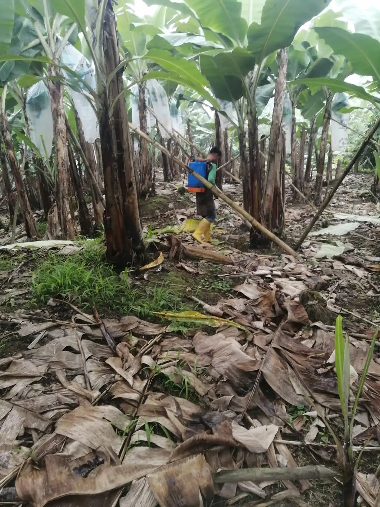
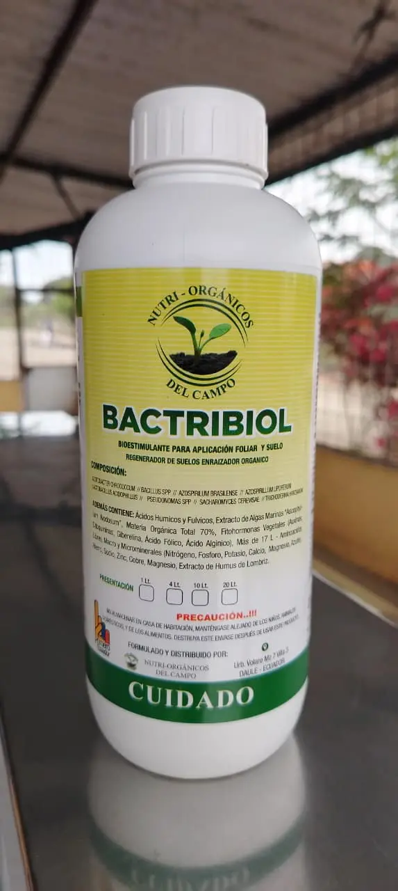
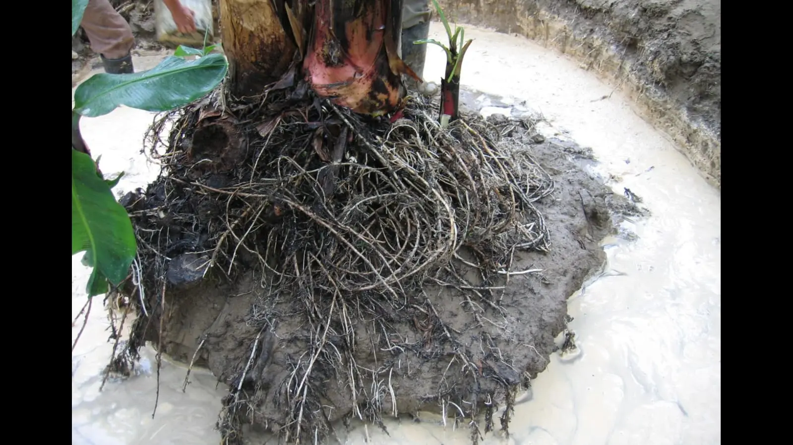
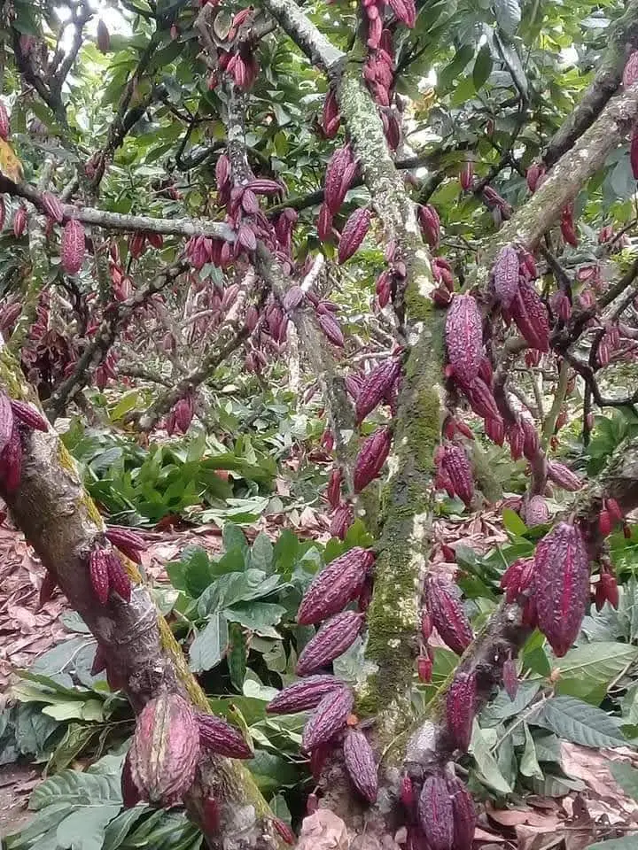
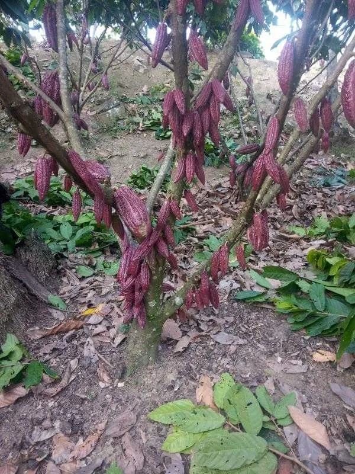
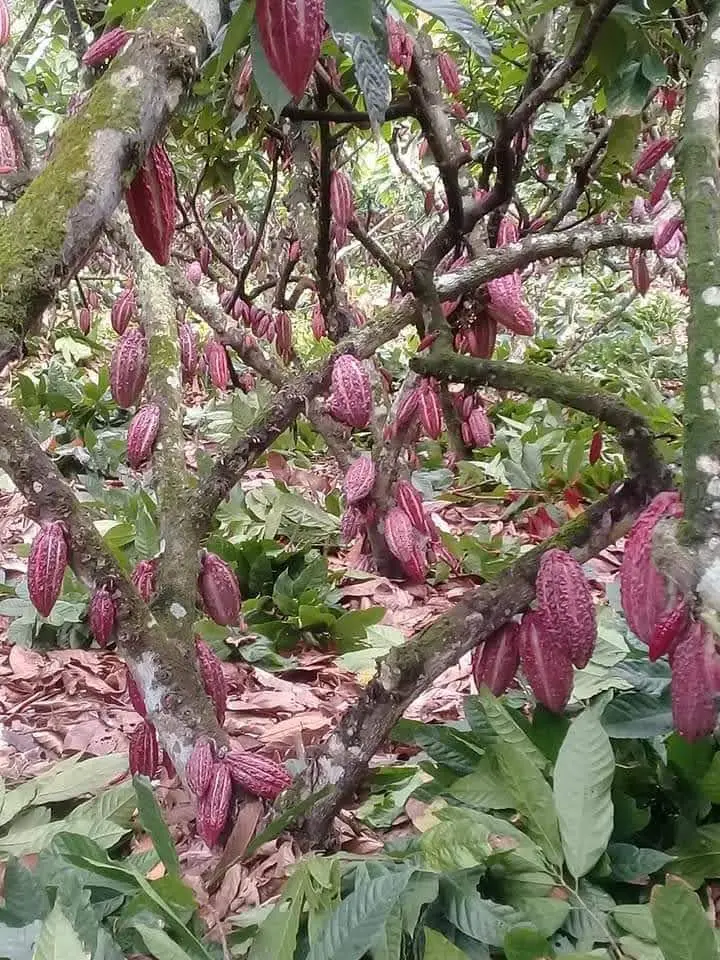
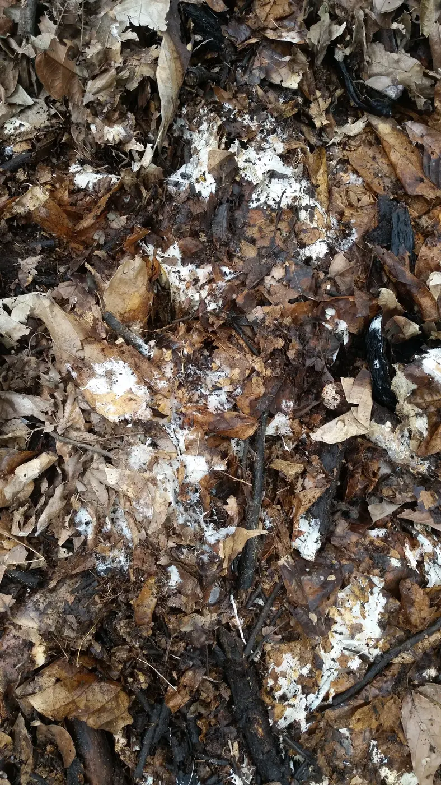
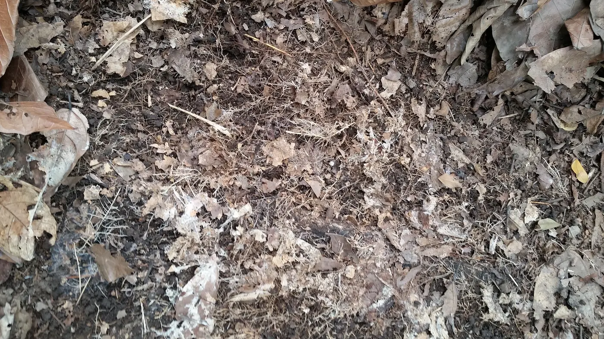
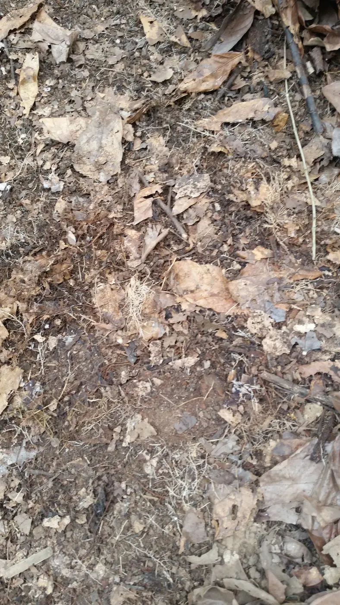
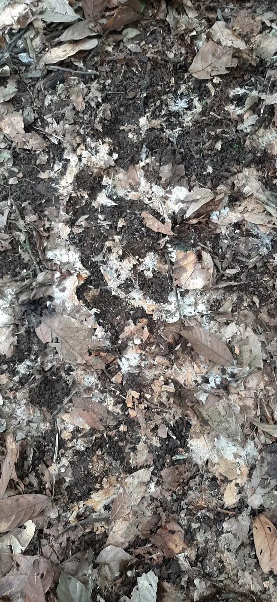

Propósito
Productividad con sostenibilidad
Aportar a una agricultura más productiva y sostenible mediante insumos de origen orgánico y acompañamiento técnico oportuno.
Agricultura ecuatoriana · nutrición orgánica
Soluciones agrícolas responsables para fortalecer los cultivos y acompañar al productor con criterio técnico, cercanía y respeto por la naturaleza.
Por una agricultura más productiva y en armonía con la naturaleza.
Quiénes somos
Nutri Orgánicos del Campo comercializa soluciones para la conservación del suelo y la nutrición vegetal. Integramos conocimiento agronómico, productos de origen orgánico y atención personalizada para responder a las necesidades reales de cada cultivo.
Propósito
Aportar a una agricultura más productiva y sostenible mediante insumos de origen orgánico y acompañamiento técnico oportuno.
Misión
Comercializar insumos agrícolas de origen orgánico y orientar soluciones técnicas que contribuyan al mejoramiento cualitativo y cuantitativo de los cultivos.
Visión
Aportar soluciones globales y personalizadas con una visión de sostenibilidad, cuidado de los suelos agrícolas, los cultivos y el planeta.

Nuestro enfoque
Escuchamos al productor, revisamos las condiciones del terreno y orientamos una aplicación adaptada al contexto productivo. La innovación tiene valor cuando se convierte en una solución útil.
Identificamos la necesidad del cultivo y las condiciones del terreno.
Definimos producto, momento y forma de aplicación con criterio técnico.
Orientamos una aplicación eficiente y responsable.
Revisamos resultados y oportunidades de ajuste.

Producto destacado
Bioestimulante para aplicación foliar y al suelo · enraizador orgánico · regenerador de suelo
Bactribiol es un producto de formulación orgánica que combina microorganismos benéficos, materia orgánica, ácidos húmicos y fúlvicos, aminoácidos, extractos de algas marinas, fitohormonas vegetales, humus de lombriz y minerales.
Al entrar en contacto con el suelo, busca promover la regeneración de la rizosfera, mejorar la biodisponibilidad de nutrientes y apoyar la actividad fisiológica y biológica de las plantas cultivadas.
Composición declarada
La información se transcribe de la ficha técnica disponible. Las unidades, concentraciones y recomendaciones deben contrastarse siempre con la etiqueta del producto.
Beneficios declarados
Aplicación al suelo
Aplicación foliar

Aplicación responsable
Aplicar con humedad relativa adecuada, temperatura moderada y buena humedad del suelo; generalmente temprano en la mañana o al finalizar el día.
Llenar el tanque con agua limpia hasta la mitad, agregar la dosis recomendada, agitar y completar con agua hasta el volumen final. Utilizar equipo adecuado y calibrado para lograr una cobertura uniforme.
La dosis depende del cultivo y las condiciones de campo. Consulte a un ingeniero agrónomo y siga siempre la etiqueta vigente.
Cultivos y frecuencia
Dosis estándar declarada: 1 Lt./Ha/cultivo. La frecuencia debe validarse con asistencia agronómica.
Evidencia de campo
Imágenes del archivo fotográfico de Nutri Orgánicos del Campo. Documentan observaciones y actividades en campo sin sustituir una evaluación agronómica.







Información técnica y seguridad
Esta sección organiza la información esencial del documento técnico. Ante cualquier diferencia, prevalecen la etiqueta y la ficha vigentes.
Compatible con la mayor parte de los agroquímicos de uso común. No se recomienda mezclar con agroquímicos organofosforados. Ante cualquier duda, realizar una prueba previa de compatibilidad.
Puede provocar irritación de ojos, nariz, garganta o piel.
La ficha declara que no presenta peligro de fuego ni de explosión y que es estable. Evitar materiales fuertemente alcalinos o ácidos. En caso de derrame, recoger con agua, aserrín u otro absorbente, confinar el material y lavar el área con abundante agua.
Documento completo
Consulta composición, beneficios, cultivos, compatibilidad, seguridad, almacenamiento y medidas ambientales.
Nuestro compromiso
Soluciones orientadas al cuidado del suelo, los cultivos, las personas y el entorno.
Búsqueda continua de técnicas de aplicación, procesos y soluciones de origen orgánico.
Orientación para optimizar aplicaciones, inversión y respuesta agronómica.
Cercanía para comprender necesidades y construir respuestas oportunas.
Alternativas de entrega desde bodega hasta el destino de trabajo.
Aprendizaje de la experiencia de campo para evolucionar productos y procesos.
Hablemos del campo
Sigue a Nutri Orgánicos del Campo para conocer información técnica, actividades y evidencia de campo.